📊 Time Graph X
📖 Time Graph X - Kullanım Kılavuzu
Versiyon: 1.0.0
Platform: Windows 10/11
Son Güncelleme: Ekim 2025
📋 İçindekiler
- Başlangıç
- İlk Adımlar
- Veri Yükleme
- Sinyal Seçimi ve Ayarları
- Grafik Yönetimi
- İstatistiksel Analiz
- Korelasyon Analizi
- Bitmask (Dijital Sinyal) Analizi
- Gelişmiş Analiz Araçları (Filtreleme, Static Limits, Sapma Analizi)
- Çoklu Dosya Yönetimi
- Proje Kaydetme ve Yükleme
- Sorun Giderme
- Teknik Destek
1. Başlangıç
1.1 Time Graph X Nedir?
Time Graph X, profesyonel zaman serisi veri analizi için geliştirilmiş, güçlü ve kullanıcı dostu bir masaüstü uygulamasıdır.
Kullanım Alanları:
- 🏭 Motor ve makine test verileri analizi
- 📊 Sensör verilerinin görselleştirilmesi
Ana Özellikler:
- ✅ Kolay veri yükleme (CSV, Excel)
- ✅ Çoklu grafik desteği
- ✅ Gelişmiş ölçüm araçları (Dual Cursor)
- ✅ Otomatik istatistik hesaplama
- ✅ Güçlü filtreleme sistemi
- ✅ Hızlı proje kaydetme (.mpai format)
2. İlk Adımlar
2.1 Uygulamayı Başlatma
- Time Graph X.exe dosyasına çift tıklayın
- Terminal penceresi açılacaktır ve daha sonra uygulamanın ana penceresi açılacaktır.
- Ana pencere açılır
2.2 Ana Pencere Düzeni
Ana pencere 4 ana bölümden oluşur:
┌─────────────────────────────────────────────────────────┐
│ ⚙️ TOOLBAR (Üst Menü) │
├───────────┬─────────────────────────────┬───────────────┤
│ │ │ │
│ SOL │ GRAFIK ALANI │ SAĞ │
│ SIDEBAR │ (Grafikler) │ SIDEBAR │
│ │ │ │
│ Parameters│ │ Statistics │
│ │ │ Filters │
│ │ │ Correlations │
├───────────┴─────────────────────────────┴───────────────┤
│ 📊 STATUS BAR (Durum Çubuğu) │
└─────────────────────────────────────────────────────────┘
Grafik Görünümü ve Dosya Sekmeleri
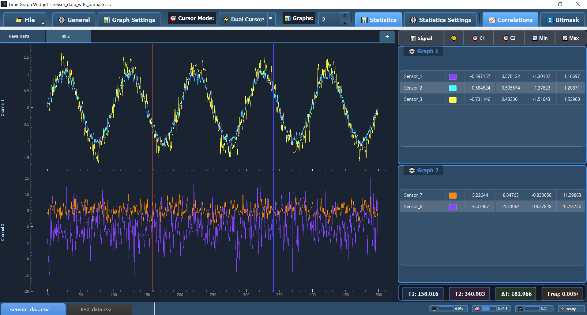
Alt kısımda dosya sekmeleri , üst kısımda grafik sekmeleri (Tab 1, Tab 2), sağda Statistics paneli
Bölüm Açıklamaları:
- Üst Toolbar
- File, General, Graph Settings vb. butonlar ile sol panelde açılacak içerik belirlenir.
- Cursor Mode, Graphs sayı kontrolü gibi seçimler yapılabilir.
- Sol Panel
- File: Proje açma, veri açma, kaydetme seçenekleri ve klavye kısayolları
- General: Tema seçimi, grafik export,veri export)
- Graph Settings: Tüm grafikler için ayarlar (Normalize, Show Grid, Auto-scale, Show Legend, Line Width, etc.)
- Cursor Mode: None / Dual cursors
- Graphs: Grafik sayısı belirleme
- Statistics Settings: İstatistik paneli için ayarlar
- Correlations: Korelasyon analizi
- Bitmask: Hata kodlarındaki decimal sayıların bitlerini analiz ederek sinyallerin durumunu gösterir
- Grafik Alanı (Ortada)
- Zaman serisi grafikleri
- Zoom ve pan işlemleri
- Dual cursor çizgileri
- Sağ Panel (İstatistikler)
- Signal: Seçili sinyaller listesi
- C1, C2: Cursor 1 ve 2 değerleri
- Min, Mean, Max, RMS, Std: İstatistik kolonları
- Duty %: Duty cycle yüzdeleri
- Alt Bar
- Dosya sekmeleri (xx.csv, yy.csv, ...)
- T1, T2, ΔT, Freq: Cursor bilgileri
- Sistem durumu (Ready, yükleme %)
3. Veri Yükleme
3.1 Desteklenen Dosya Formatları
- CSV Dosyaları (.csv) - Virgül veya noktalı virgül ile ayrılmış
- Excel Dosyaları (.xlsx, .xls) - Microsoft Excel
- Proje Dosyaları (.mpai) - Time Graph X özel formatı
Maksimum Dosya Boyutu: 25 MB
3.2 Temel Veri Yükleme
Adımlar:
- Dosya menüsünü açın
- Üst menüde 📁 File butonuna tıklayın
- "Open Data File" seçeneğini seçin
- Veya klavyede Ctrl+O tuşlarına basın
File Menüsü
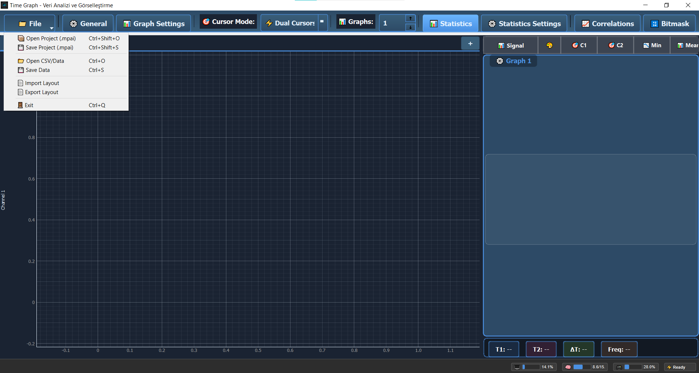
File menüsü açık hali - Proje açma, veri açma, kaydetme seçenekleri ve klavye kısayolları
💡 İpucu: File menüsünde tüm dosya işlemleri için klavye kısayolları bulunur (Ctrl+O, Ctrl+S, vb.)
- Dosya seçin
- Bilgisayarınızdan CSV veya Excel dosyanızı seçin
- "Aç" butonuna tıklayın
- Import Dialog açılır
- Veri önizleme ekranı gelir
- İlk 10 satır gösterilir
Import Dialog
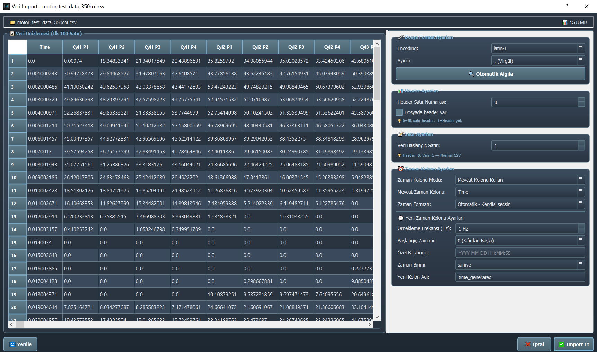
Import dialog penceresi - Veri önizleme, delimiter, encoding, header satırı, zaman kolonu ayarları
3.3 Import Dialog Ayarları
Import Dialog, verinin doğru şekilde yüklenmesi için gelişmiş ayarlar sunar.
A. Temel Ayarlar
1. Delimiter (Ayırıcı Karakter)
Verinizdeki kolonların nasıl ayrıldığını belirtir:
- Comma (,) - Varsayılan CSV formatı
- Semicolon (;) - Türkçe Excel dosyaları için
- Tab - Tab ile ayrılmış dosyalar
- Pipe (|) - Özel formatlar
- Space - Boşlukla ayrılmış
⚠️ Önemli: Türkçe Excel'den kaydedilen CSV dosyaları genellikle noktalı virgül (;) kullanır.
2. Encoding (Karakter Kodlaması)
Türkçe karakter sorunu yaşıyorsanız:
- Latin-1 - Türkçe karakterler için ÖNERİLEN
- UTF-8 - Modern standart
- CP1252 - Windows varsayılanı
- ASCII - Sadece İngilizce karakterler
3. Header Row (Başlık Satırı)
Kolon isimlerinin hangi satırda olduğunu belirtin:
- Genellikle 0 (ilk satır)
- Bazı dosyalarda 1 veya 2 olabilir
4. Start Row (Veri Başlangıç Satırı)
Gerçek verinin hangi satırdan başladığını belirtin:
- Header'dan hemen sonraki satır
- Genellikle 1 (ikinci satır)
⚠️ Dikkat: Türkçe Excel'den kaydedilen CSV dosyaları için Delimiter: Semicolon (;) ve Encoding: Latin-1 seçin.
B. Zaman Kolonu Ayarları
Time Graph X, zaman eksenini oluşturmak için bir zaman kolonu gerektirir.
İki seçenek vardır:
Seçenek 1: Mevcut Zaman Kolonu Kullan
Dosyanızda zaten bir zaman kolonu varsa bu seçeneği kullanın.
Adımlar:
- "Use Existing Time Column" seçeneğini işaretleyin
- Time Column dropdown'dan zaman kolonunu seçin
- Time Format seçin:
- Automatic - Otomatik algılama (önerilen)
- Unix Timestamp - 1693526400 gibi sayılar
- ISO DateTime - 2023-09-01 12:00:00 formatı
- Numeric Index - 0, 1, 2, 3... şeklinde sayılar
Örnek Zaman Formatları:
Unix Timestamp: 1693526400
ISO DateTime: 2023-09-01 12:00:00
Numeric Index: 0, 0.001, 0.002, 0.003, ...
Seçenek 2: Yeni Zaman Kolonu Oluştur
Dosyanızda zaman kolonu yoksa veya yeni bir zaman serisi oluşturmak istiyorsanız:
Adımlar:
- "Create Custom Time Column" seçeneğini işaretleyin
- Ayarları yapın:
Sampling Frequency (Örnekleme Frekansı):
- Verinizin saniyedeki örnek sayısı (Hz)
- Örnek: Motor 1000 Hz'de ölçülmüşse → 1000
Start Time Mode:
- 0 (Sıfırdan Başla) - Zaman 0'dan başlar
- Current Time - Şu anki zaman
- Custom Time - Özel bir zaman belirtin (YYYY-MM-DD HH:MM:SS)
Time Unit (Zaman Birimi):
- Seconds - Saniye
- Milliseconds - Milisaniye
- Microseconds - Mikrosaniye
- Nanoseconds - Nanosaniye
Örnek Ayar:
Motor test verisi - 1000 Hz örnekleme:
├─ Sampling Frequency: 1000 Hz
├─ Start Time Mode: 0 (Sıfırdan Başla)
├─ Time Unit: Milliseconds
└─ Oluşan zaman: 0, 1, 2, 3, ... (ms cinsinden)
✅ En İyi Uygulama: Dosyanızda zaman kolonu yoksa "Create Custom Time Column" kullanarak otomatik oluşturun.
C. Veri Önizleme
Import Dialog'un alt kısmında verinin önizlemesi gösterilir:
- İlk 10 satır tablo halinde
- Kolon isimleri başlıkta
- Veri tipleri otomatik algılanmış
Kontrol edin:
- ✅ Kolonlar doğru ayrılmış mı?
- ✅ Türkçe karakterler düzgün mü?
- ✅ Sayısal değerler doğru mu?
💡 İpucu: Veri önizlemede kolonların doğru ayrıldığını ve Türkçe karakterlerin düzgün göründüğünü kontrol edin.
3.4 Veri Yükleme
Tüm ayarları yaptıktan sonra:
- "Import Et" butonuna tıklayın
- Loading (yükleniyor) animasyonu görünür
- Veri yüklendikten sonra grafikler açılır
Yükleme Süreleri:
- Küçük dosyalar (< 5 MB): 1-3 saniye
- Orta dosyalar (5-15 MB): 3-8 saniye
- Büyük dosyalar (15-25 MB): 8-15 saniye
⚡ Hızlı Yükleme: İkinci ve sonraki yüklemelerde Parquet cache devreye girer ve yükleme 8-27x daha hızlı olur!
Başarılı yüklemede:
- Status bar'da dosya bilgisi gösterilir
- Örnek:
"Dosya yüklendi: motor_data.csv (50,000 satır, 24 sütun)"
- Sol sidebar'da tüm kolonlar listelenir
- Grafikler boş olarak hazırlanır
4. Sinyal Seçimi ve Ayarları
4.1 Parameters Paneli
Advanced Settings penceresindeki Parameters sekmesi, yüklenen tüm veri kolonlarını gösterir.
Erişim:
- İstatistik panelindeki her grafiğin başlığındaki "⚙️ Graph" ikonuna tıklayın
- Açılan pencerede sol menüden "Parameters" sekmesini seçin
Parameters Seçim Ekranı
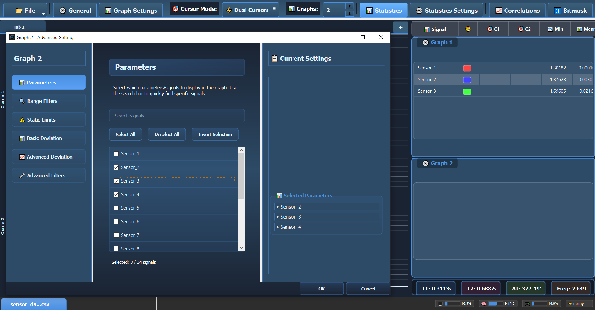
Graph 2 için parametre seçimi - Sensor_2, Sensor_3 ve Sensor_4 seçili durumda. Sağda seçili parametrelerin listesi ve renklerle birlikte gösterim.
Panel Yapısı:
- Sol: Parametre listesi (checkbox ile seçim)
- Üst: Search bar (hızlı arama)
- Üst butonlar: Select All, Deselect All, Invert Selection
- Sağ: Selected Parameters listesi (seçilenlerin özeti)
- Alt: Selected: X / Y signals (kaç tane seçili)
4.2 Sinyal Seçme
Bir sinyali grafiğe eklemek için:
- Grafiğin "⚙️ Graph" ikonuna tıklayın
- Advanced Settings penceresi açılır
- Sol menüden "Parameters" seçin
- Tüm parametreler listelenir
- İstediğiniz parametreleri işaretleyin
- Checkbox'ları işaretleyin (☑️)
- Sağda "Selected Parameters" listesinde görünür
- "OK" butonuna tıklayın
- Seçili parametreler grafikte gösterilir
💡 İpucu: Search bar'ı kullanarak parametreleri hızlıca bulabilirsiniz. "Select All" ile tümünü seçip sonra gereksiz olanları kaldırabilirsiniz.
4.3 Toplu İşlemler
Panel üstündeki butonlarla toplu işlem yapabilirsiniz:
"Select All" (Tümünü Seç)
- Tüm sinyalleri aktif eder
- Hepsini Graph 1'e atar
"Deselect All" (Tümünün Seçimini Kaldır)
- Tüm sinyalleri pasif eder
- Grafikler temizlenir
"Collapse/Expand All" (Tümünü Topla/Aç)
- Uzun listelerde paneli temiz tutar
⚠️ Performans İpucu: Çok fazla sinyal seçmek uygulamayı yavaşlatabilir. Gerekli olanları seçin.
4.4 Sinyal Renkleri
Varsayılan Renkler:
Time Graph X, sinyallere otomatik renkler atar:
- 🔴 Kırmızı, 🔵 Mavi, 🟢 Yeşil, 🟠 Turuncu, 🟡 Sarı, 🟣 Mor, 🟤 Kahverengi, 🔵 Cyan
Otomatik Renklendirme:
Grafiğin sağındaki istatistik panelinde her sinyal için otomatik renk atanır. Renkli küplere tıklayarak renk değiştirilebilir.
5. Grafik Yönetimi
5.1 Grafik Sayısını Ayarlama
Toolbar'daki "Graphs" başlığının sağındaki sayı kutusundan grafik sayısını ayarlayabilirsiniz.
Adımlar:
- Üst toolbar'da "Graphs:" yazısının yanındaki kutuya tıklayın
- İstediğiniz grafik sayısını yazın veya ok tuşları ile değiştirin
📸 Çoklu Grafik Düzeni
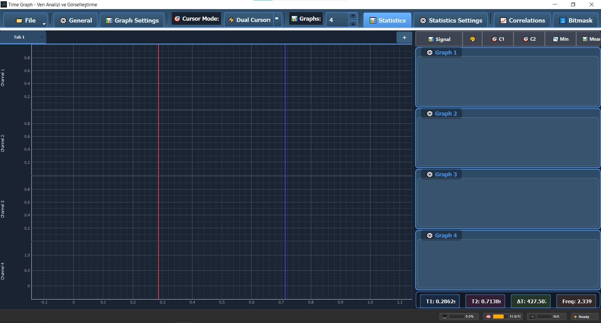
Grafik sayısını ayarlama
5.2 Grafik İle Etkileşim
Zoom ve Pan İşlemleri
Mouse ile:
Zoom ve Pan İşlemleri
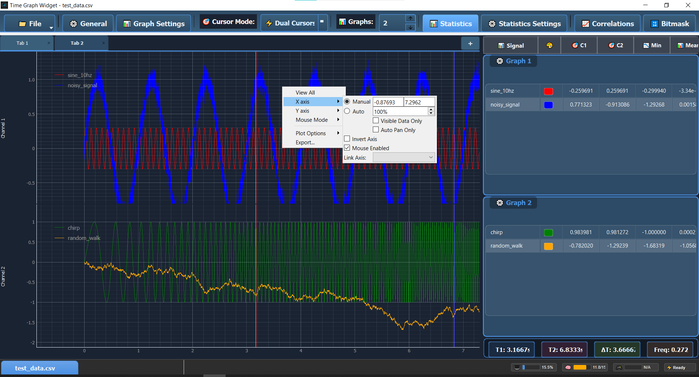
Mouse tuşlarıyla zoom ve pan işlemleri yapılabilirken, mouse'un sağ tuşuna basılarak açılan menü ile de işlem yapılabilir.
Senkronize Zoom:
- Bir grafikte zoom yaptığınızda tüm grafikler aynı zaman aralığını gösterir
- Bu sayede farklı sinyalleri aynı zamanda karşılaştırabilirsiniz
Sağ Tık Menüsü
Grafik üzerinde sağ tıkladığınızda:
┌─────────────────────┐
│ Auto Range │ ← Otomatik ölçeklendirme
│ View All │ ← Tüm veriyi göster
│ Export Image... │ ← Grafik görselini kaydet
│ Reset to Default │ ← Varsayılana dön
└─────────────────────┘
💡 İpucu: Sağ tık menüsü ile ya da sol pneldeki Graph settings ile daha fazla seçeneğe erişebilirsiniz.
5.3 Graph Settings Paneli
Sol paneldeki Graph Settings, tüm grafiklere aynı anda uygulanacak global ayarları içerir.
Erişim:
- Toolbar'da 📊 "Graph Settings" butonuna tıklayın
- Sol panel açılır ve tüm grafik ayarları görünür
Graph Settings Paneli
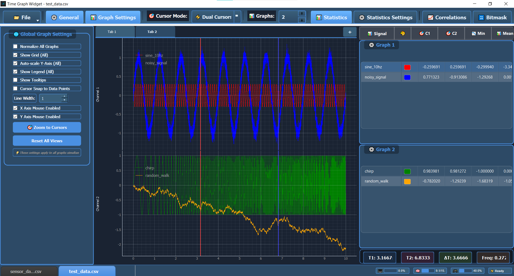
Sol panelde Graph Settings - Tüm grafiklere aynı anda uygulanan global ayarlar
Ayarlar:
1. Normalize All Graphs
- Tüm grafiklerdeki sinyalleri normalize eder
- Farklı ölçekteki sinyalleri karşılaştırmak için
2. Show Grid
- Tüm grafiklerde grid çizgilerini gösterir
- Grafiği okumayı kolaylaştırır
3. Auto-scale Y-Axis
- Y eksenini otomatik ölçeklendirir
- Zoom yaptığınızda Y ekseni otomatik ayarlanır
4. Show Legend
- Grafik üzerinde sinyal isimlerini gösterir
- Her sinyal için renk göstergesi
5. Show Tooltips
- Mouse ile üzerine gelindiğinde değer gösterir
- Hassas değer okumak için
6. Cursor Snap to Data Points
- Cursor otomatik olarak veri noktalarına yapışır
- Kesin değerleri okumak için
7. Line Width
- Tüm grafiklerdeki çizgi kalınlığını ayarlar
- 1-5 piksel arası ayarlanabilir
8. X/Y Axis Mouse Enabled
- Mouse ile eksenlerde zoom yapabilme
- Sadece X veya Y ekseninde zoom için
9. Zoom to Cursors
- İki cursor arasındaki bölgeye zoom yapar
- Dual cursor modunda kullanışlı
10. Reset All Views
- Tüm grafiklerin zoom/pan ayarlarını sıfırlar
- Başlangıç görünümüne döner
💡 İpucu: Graph Settings'teki ayarlar tüm grafiklere aynı anda uygulanır. Tek bir grafik için özel ayar yapmak isterseniz, o grafiğin üzerine gelip sağ tıklayıp ilgili ayarlamayı yapın.
5.4 Cursor Modları
Toolbar'daki 🎯 "Cursor Mode" butonu ile cursor'ları açıp kapatabilirsiniz.
Cursor Modları
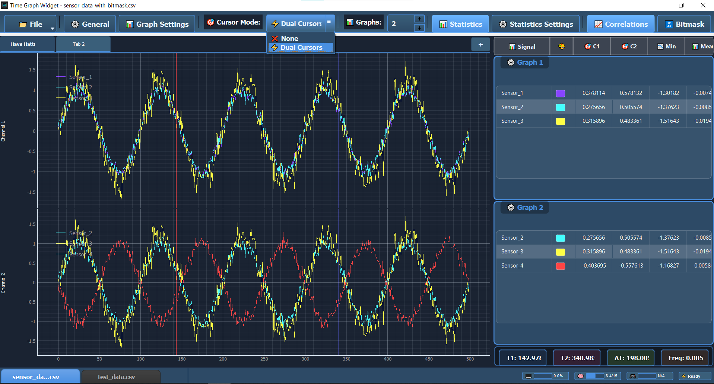
Dual Cursor modunda - Kırmızı ve Mavi cursor çizgileri, sağda T1, T2 ve ΔT değerleri gösteriliyor
None (Kapalı):
- Cursor gösterilmez
- Sadece zoom ve pan ile çalışırsınız
- Performans maksimum
Dual Cursors (Açık):
- İki dikey çizgi gösterilir (Cursor 1 - Kırmızı, Cursor 2 - Mavi)
- Grafiğe tıklayarak cursor'ları yerleştirin
- İki nokta arasındaki zaman farkı (ΔT) ve değer farkları hesaplanır
- Alt status bar'da T1, T2, ΔT ve Freq değerleri gösterilir
- Sağdaki Statistics panelinde her iki cursor için ayrı değerler gösterilir
Kullanım:
- Toolbar'da "Cursor Mode" butonuna tıklayın
- "Dual Cursors" seçeneğini aktif edin
- Grafikte ilk noktaya tıklayın → Kırmızı cursor (T1)
- İkinci noktaya tıklayın → Mavi cursor (T2)
- Alt bar'da ΔT (zaman farkı) ve Freq (frekans) değerlerini görün
💡 İpucu: Cursor'ları sürükleyerek hareket ettirebilirsiniz. Tüm grafiklerde aynı zaman noktalarını gösterirler.
- Yükselme süresi (rise time) ölçümü
- Frekans hesaplama
- İki farklı zaman noktasındaki değerleri karşılaştırma
- Periyot ölçümü
6. İstatistiksel Analiz
6.1 Statistics Panel
Konum: Sağ sidebar → "📊 Statistics" sekmesi
Statistics panel, seçili sinyallerin otomatik hesaplanan istatistiklerini gösterir.
İstatistik Paneli
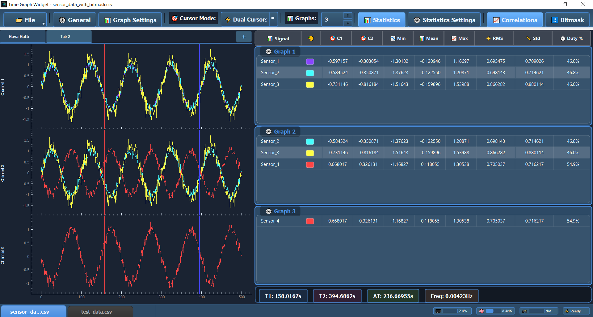
Dual cursors aktif, sağda her grafik için Min, Mean, Max, RMS, Std ve Duty % sütunları ile istatistikler gösteriliyor
6.2 Gösterilen İstatistikler
Her sinyal için hesaplanan değerler:
Örnek Gösterim:
═══ Motor_Speed ═══
✓ Minimum: 0 RPM
✓ Mean: 2450 RPM
✓ Maximum: 5000 RPM
✓ RMS: 2520 RPM
✓ Std Dev: 620 RPM
✅ Otomatik Hesaplama: İstatistikler seçtiğiniz sinyaller için otomatik hesaplanır ve sürekli güncellenir.
6.3 İstatistik Ayarları
Hangi istatistiklerin gösterileceğini seçebilirsiniz:
- Toolbar'da "⚙️ Statistics Settings" butonuna tıklayın
- Statistics Settings Dialog açılır
- İstediğiniz istatistikleri işaretleyin:
☑️ Minimum
☑️ Maximum
☑️ Mean (Average)
☑️ RMS
☑️ Standard Deviation
☐ Variance
☐ Peak-to-Peak
☐ Median
- Sadece İstatistik panelde görünmesini istediğiniz parametreleri bırakın.
Statistics Settings
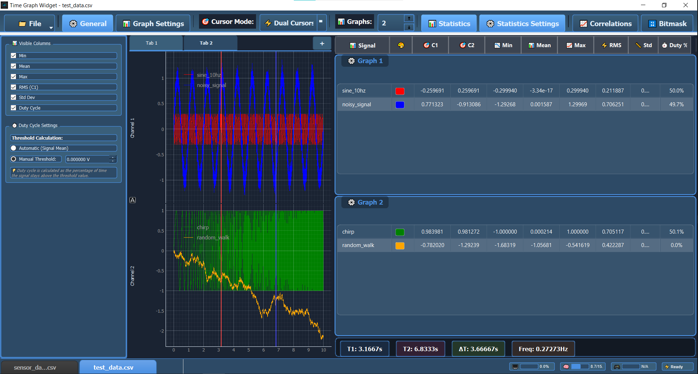
Sol panelde Visible Columns seçimi (Min, Mean, Max, RMS, Std Dev, Duty Cycle), Duty Cycle Settings ve Threshold ayarları
Performans İpucu:
- Gereksiz istatistikleri kapatın
- Büyük veri setlerinde hesaplama hızlanır
6.4 Cursor ile İstatistik
Single Cursor: O anki değerler gösterilir
Dual Cursor: İki nokta arası değerler ve delta gösterilir
Dual Cursor ile Segment İstatistikleri:
═══ Segment Statistics (Cursor 1 → 2) ═══
Time Range: 2.345s - 5.890s (Δ 3.545s)
Motor_Speed (bu aralıkta):
✓ Minimum: 2250 RPM
✓ Maximum: 3120 RPM
✓ Mean: 2685 RPM
💡 İpucu: Dual cursor ile belirli bir zaman aralığının istatistiklerini görebilirsiniz - özellikle anomali analizi için çok kullanışlıdır.
6.5 İstatistik Yorumlama
RMS vs Mean:
- Mean: Basit ortalama
- RMS: AC sinyallerde daha anlamlı (elektrik, titreşim)
Standard Deviation:
- Düşük: Sinyal stabil
- Yüksek: Sinyal dalgalı, değişken
Duty Cycle (%):
- Sinyalin aktif (HIGH) olduğu sürenin yüzdesi
- Dijital sinyallerde kullanılır (örn: PWM sinyalleri)
- Formül: (Aktif Süre / Toplam Süre) × 100
- Örnek: %50 duty cycle = Sinyalin yarısı HIGH, yarısı LOW
💡 Örnek Kullanım: Motor kontrol PWM sinyalinde %75 duty cycle = Motor gücünün %75'i kullanılıyor
7. Korelasyon Analizi
İki sinyal arasındaki ilişkiyi ölçer.
7.1 Correlations Paneli
Konum: Sol sidebar → "📈 Correlations" sekmesi
Correlations Analizi
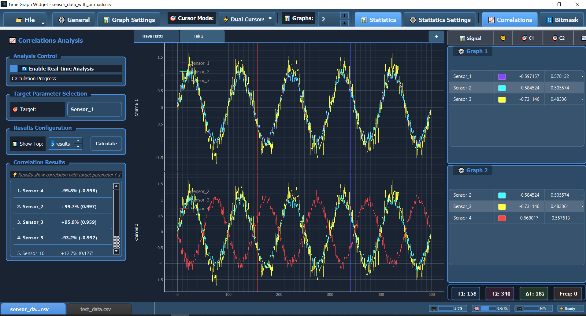
Sol panelde Correlations Analysis açık - Target parameter seçimi (Sensor_1), Enable Real-time Analysis checkbox'ı, Show Top 5 results ayarı, Calculate butonu. Correlation Results listesinde Sensor_4, Sensor_2, Sensor_3 ve Sensor_5 ile korelasyon değerleri (-99.8%, +99.7%, +95.9%, -93.2%) gösteriliyor.
7.2 Korelasyon Nedir?
Korelasyon, iki sinyal arasındaki ilişkiyi sayısal olarak ifade eder. Bir sinyaldeki değişimin diğer sinyaldeki değişimle ne kadar uyumlu olduğunu gösterir.
Ne İşe Yarar?
- Bağımlılık Tespiti: Hangi parametrelerin birbirine bağlı olduğunu bulun
- Kök Neden Analizi: Bir sorunu neyin tetiklediğini keşfedin
- Tahmin: Bir parametreye bakarak diğerini tahmin edin
- Optimizasyon: Hangi parametrelerin birlikte değiştiğini anlayın
- Anomali Tespiti: Beklenmeyen ilişkiler sorun işareti olabilir
Pearson Korelasyon Katsayısı (r):
Time Graph X, Pearson korelasyon katsayısı kullanır. Bu yöntem:
- İki sinyal arasındaki doğrusal ilişki gücünü ölçer
- Değer aralığı: -1 ile +1 arası
- Her iki sinyalin aynı zaman noktalarındaki değerlerini karşılaştırır
- Sinyaller birlikte mi artıyor/azalıyor yoksa ters mi hareket ediyor?
Nasıl Hesaplanır?
1. Her iki sinyalden aynı zaman noktalarındaki değerler alınır
2. Her sinyalin ortalaması hesaplanır
3. Her değerin ortalamadan sapması bulunur
4. Bu sapmalar çarpılır ve toplanır
5. Sonuç normalize edilir → -1 ile +1 arası değer
r Değerinin Yorumlanması:
| r Değeri | Anlamı | Örnek |
|---|---|---|
| r = +1 | Mükemmel pozitif | Hız artarsa güç de artar |
| r = +0.8 | Güçlü pozitif | Motor yükü artarsa sıcaklık artar |
| r = +0.5 | Orta pozitif | Hava sıcaklığı artarsa motor sıcaklığı artar |
| r = 0 | İlişki yok | Hız ile gün ışığı |
| r = -0.5 | Orta negatif | Hız artarsa verim azalır |
| r = -1 | Mükemmel negatif | Tam ters ilişki |
💡 Önemli: Korelasyon sadece doğrusal ilişkileri ölçer. İki sinyal arasında ilişki olsa bile, bu ilişki doğrusal değilse düşük r değeri görebilirsiniz.
7.3 Korelasyon Hesaplama
Otomatik:
- Panel açıldığında tüm sinyal çiftleri için otomatik hesaplanır
Manuel:
- "Calculate Correlations" butonuna tıklayın
✅ Otomatik Hesaplama: Bir hedef parametre seçin, Calculate'e tıklayın - tüm diğer parametrelerle korelasyonu otomatik hesaplanır!
Tablo Yapısı:
Signal Pair Correlation Strength
─────────────────────────────────────────────────────
Motor_Speed ↔ Motor_Power +0.92 Very Strong
Motor_Speed ↔ Vibration +0.67 Moderate
Motor_Temp ↔ Ambient_Temp +0.45 Weak
Motor_Speed ↔ Efficiency -0.35 Weak (Negative)
Voltage ↔ Temperature +0.12 Very Weak
Strength Levels (Güç Seviyeleri):
8. Bitmask (Dijital Sinyal) Analizi
Bitmask, dijital sinyalleri bit bit incelemenizi sağlar.
8.1 Bitmask Nedir?
Dijital verilerin bit düzeyinde analizi
Ne zaman kullanılır?
- CAN bus verileri
- Durum bayrakları (status flags)
- Hata kodları
- Digital I/O sinyalleri
- Modbus/Profibus verileri
Örnek:
Status Register = 0b10110101 (8-bit)
Bit 0 (LSB): Motor Running → 1 (Açık)
Bit 1: Temperature Alarm → 0 (Kapalı)
Bit 2: Overspeed → 1 (Açık)
Bit 3: Fault → 0 (Kapalı)
Bit 4: Emergency Stop → 1 (Açık)
Bit 5: Door Open → 1 (Açık)
Bit 6: Reserved → 0
Bit 7 (MSB): System Ready → 1 (Açık)
8.2 Bitmask Paneli
Konum: Sol sidebar → "🔢 Bitmask" sekmesi
Bitmask Analizi
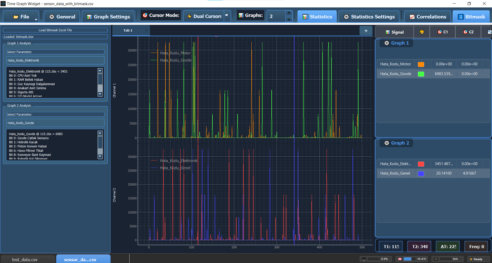
Bitmask paneli solda açık - Excel dosyası yüklenmiş (bitmask.xlsx), Graph 1 ve Graph 2 için ayrı parametre seçimi yapılıyor. Her bit için açıklama (Bit 0: CPU Aşırı Yük, Bit 1: RAM Bellek Hatası, vb.) gösteriliyor. Grafiklerde dijital sinyaller gösterimi.
8.3 Bitmask Analizi Yapma
Adımlar:
- Parameter seçin
- Dropdown'dan bitmask içeren kolonu seçin
- Örnek: "StatusRegister", "ErrorCode", "Digital_IO"
- Bit ayarlarını yapın:
- Bit Count: Kaç bit analiz edilecek (1-32)
- Start Bit: Başlangıç bit pozisyonu (0 = LSB)
- "Analyze" butonuna tıklayın
Örnek Ayar:
8-bit Status Register analizi:
Parameter: Status_Register
Bit Count: 8
Start Bit: 0 (LSB'den başla)
✅ Hızlı Başlangıç: Parameter seçin, bit sayısını belirleyin (1-32), Analyze'e tıklayın - her bit ayrı sinyal olarak gösterilir!
8.4 Bit Görselleştirme
Her bit ayrı bir sinyal olarak gösterilir:
Status_Register_Bit0 (Motor Running)
Status_Register_Bit1 (Temp Alarm)
Status_Register_Bit2 (Overspeed)
...
Status_Register_Bit7 (System Ready)
Grafik Gösterimi:
- 1 (HIGH): Yukarıda
- 0 (LOW): Aşağıda
- Dijital kare dalga şeklinde
✅ Dijital Sinyal Gösterimi: Her bit HIGH (1) veya LOW (0) olarak kare dalga şeklinde gösterilir. Yeşil çizgiler HIGH, düşük seviye LOW durumu gösterir.
9. Gelişmiş Analiz Araçları
9.1 Değer Aralığı Filtreleme
Filtreleme, belirli koşulları sağlayan verileri göstermenizi sağlar.
9.1.1 Filters Paneli
Konum: Advanced Settings → "Range Filters"sekmesi
Erişim:
- Grafiğin ⚙️ ikonuna tıklayın
- Sol menüden "Range Filters" seçin (basit filtreler için)
Range Filters
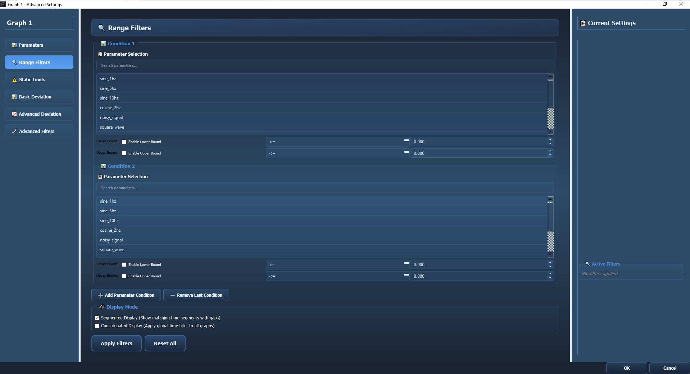
Advanced Settings içinde Range Filters sekmesi - Condition 1 ve Condition 2 ile çoklu filtre ekleme, Lower/Upper Bound ayarları, Segmented/Concatenated Display Mode seçenekleri
9.1.2 Range Filter Ayarları
Adımlar:
- Condition 1 için ayarları yapın:
- Parameter Selection: Search bar'dan parametre seçin
- Enable Lower Bound: Alt sınır aktif et (>=)
- Enable Upper Bound: Üst sınır aktif et (<=)
- Değerleri girin
- "Add Parameter Condition" ile ikinci koşul ekleyin (opsiyonel)
- Display Mode seçin:
- Segmented (boşluklarla) veya Concatenated (birleşik)
- "Apply Filters" butonuna tıklayın
Operatörler:
>=><=<==!=Örnek Filtre:
Motor hızı 1000 RPM'in üzerinde olsun:
Parameter: Motor_Speed
Operator: >=
Value: 1000
✅ Hızlı Filtreleme: Bir parametre seçin, operator belirleyin, değer girin - basit ve güçlü!
9.1.3 Çoklu Filtre (AND Mantığı)
Birden fazla filtre ekleyebilirsiniz - Hepsi aynı anda sağlanmalıdır (AND)
Örnek:
Filtre 1: Motor_Speed >= 1000
Filtre 2: Motor_Temp < 85
Filtre 3: Voltage > 10
Sonuç: Üç koşulu DA sağlayan satırlar gösterilir
⚠️ AND Mantığı: Birden fazla filtre eklediğinizde, TÜM koşullar aynı anda sağlanmalıdır (AND logic).
Filtre Yönetimi:
- ✕ (Remove): Belirli bir filtreyi kaldır
- "Clear All Filters": Tüm filtreleri temizle
- ☐ Disable: Filtreyi geçici olarak devre dışı bırak
9.1.4 Filtre Modları
Filtreleme sonuçlarının nasıl gösterileceğini belirler.
Segmented Mode (Bölütlenmiş Mod)
Aktif: ☑️ "Segmented Mode" işaretli
Ne yapar?
- Koşulu sağlayan bölgeler gösterilir
- Sağlamayan bölgeler boşluk olarak kalır
- Zaman ekseni orijinal kalır
Kullanım: Hangi zaman aralıklarında koşul sağlanıyor görmek için
Örnek:
Filtre: Motor_Speed > 2000
Grafik:
│ ████ ████ ████ │
└─────────────────────────────┘
0s 2s 4s 6s 8s 10s
Boşluklar: Motor 2000 RPM altında olduğu anlar
💡 Segmented Mode: Koşulu sağlamayan bölgeler boşluk olarak kalır, hangi zaman aralıklarında koşul sağlanıyor görebilirsiniz.
Concatenated Mode (Birleştirilmiş Mod)
Aktif: ☐ "Segmented Mode" kapalı
Ne yapar?
- Koşulu sağlayan bölgeler birleştirilir
- Sağlamayan bölgeler silinir
- Zaman ekseni yeniden oluşturulur
Kullanım: Sadece ilgili verileri analiz etmek için
Örnek:
Filtre: Motor_Speed > 2000
Grafik:
│ ██████████████████████████ │
└─────────────────────────────┘
Sürekli grafik, düşük hız anları çıkarılmış
Zaman: Yeniden 0'dan başlar
💡 Concatenated Mode: Koşulu sağlayan bölgeler birleştirilir, sadece ilgili veriler analiz edilir.
Hangi Modu Kullanmalı?
9.1.5 Filtreleme Örnekleri
Örnek 1: Motor Çalışma Anları
Filtre: Motor_Speed > 0
Mod: Segmented
Sonuç: Motor durduğunda grafik kesilir
Örnek 2: Kritik Sıcaklık Analizi
Filtre 1: Motor_Temp >= 80
Filtre 2: Motor_Temp <= 95
Mod: Concatenated
Sonuç: Sadece 80-95°C arası veriler analiz edilir
Örnek 3: Hata Durumları
Filtre: Error_Code != 0
Mod: Segmented
Sonuç: Hataların ne zaman oluştuğu görünür
9.2 Static Limits
Excel dosyası ile ya da manuel olarak değer bazlı limit tanımlama:
Excel Format:
Time | Upper_Limit | Lower_Limit
------|-------------|------------
0.0 | 100 | 90
0.5 | 150 | 140
1.0 | 200 | 180
1.5 | 250 | 220
...
Kullanım:
- "Load Limits from Excel" butonuna tıklayın
- Excel dosyanızı seçin
- Limit çizgileri grafikte gösterilir
Static Limits
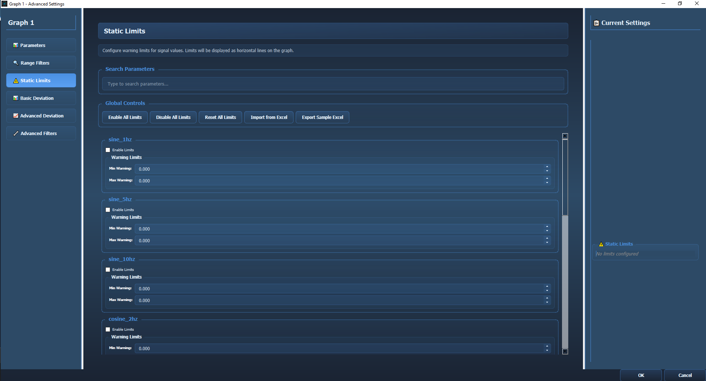
Advanced Settings içinde Static Limits sekmesi - Search Parameters bar, Global Controls (Enable/Disable All Limits, Reset, Import/Export Excel), her parametre için Warning Limits (Min/Max Warning) ayarları
Grafik Gösterimi:
- Yeşil alan: Tolerans içi (Within limits)
- Kırmızı alan: Tolerans dışı (Out of limits)
- Sapma sinyali: Deviation değerleri ayrı sinyal olarak
9.3 Sapma Analizi (Basic Deviation)
Sinyallerin trend takibi ve kısa süreli dalgalanma tespiti için basit sapma analizi.
Konum: Advanced Settings → "Basic Deviation" sekmesi
Basic Deviation Analizi
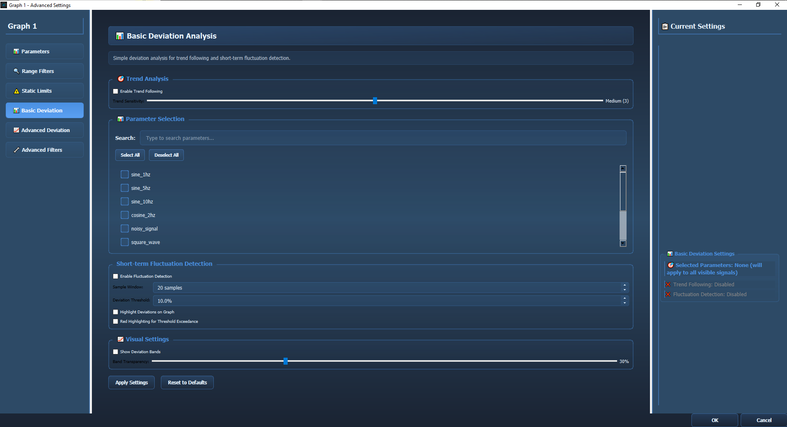
Advanced Settings içinde Basic Deviation sekmesi - Trend Analysis (Enable Trend Following), Parameter Selection (search bar ile parametre arama, Select All/Deselect All butonları), Short-term Fluctuation Detection ayarları (Sample Window, Deviation Threshold, Highlight Deviations), Visual Settings (Band Transparency slider)
9.3.1 Trend Analysis (Trend Takibi)
Enable Trend Following:
- ☑️ Aktif olduğunda sinyal trendini takip eder
- Sinyal üzerinde trend çizgisi gösterir
- Trend ile sinyal arasındaki sapmaları vurgular
Trend Sensitivity (Hassasiyet):
- 1-2: Düşük hassasiyet - Genel trend (yavaş değişim)
- 3: Orta hassasiyet - Dengeli (varsayılan)
- 4-5: Yüksek hassasiyet - Hızlı trend değişimlerini yakalar
💡 Ne İşe Yarar? Uzun vadeli trend mi yoksa kısa süreli dalgalanma mı olduğunu ayırt etmenizi sağlar. Örnek: Motor hızının genel artış trendinde mi yoksa sadece titreşim mi olduğunu gösterir.
9.3.2 Parameter Selection (Parametre Seçimi)
Search Bar:
- Parametre aramak için kullanın
- "Motor" yazarsanız sadece motor ile ilgili parametreler gösterilir
Select All / Deselect All:
- Select All: Tüm parametreleri seç
- Deselect All: Tüm seçimleri kaldır
Parameter Checkboxes:
- Analiz etmek istediğiniz parametreleri işaretleyin
- Çoklu parametre seçimi yapabilirsiniz
- Her parametre için ayrı sapma analizi yapılır
9.3.3 Short-term Fluctuation Detection (Kısa Süreli Dalgalanma Tespiti)
Enable Fluctuation Detection:
- ☑️ Aktif olduğunda ani dalgalanmaları tespit eder
- Beklenmeyen ani değişimleri vurgular
Sample Window (Örnek Penceresi):
- Değer Aralığı: 5 - 100 sample
- Varsayılan: 20 sample
- Ne İşe Yarar? Son X örnek üzerinden sapma hesaplar
- Düşük değer (5-10): Çok hassas, her küçük değişimi yakalar
- Orta değer (20-30): Dengeli, genel dalgalanmaları yakalar
- Yüksek değer (50-100): Sadece büyük dalgalanmaları yakalar
Deviation Threshold (Sapma Eşiği):
- Değer Aralığı: 1% - 50%
- Varsayılan: 10%
- Ne İşe Yarar? Bu eşiği aşan değişimler "sapma" olarak işaretlenir
- Örnek: %10 eşik → Sinyal %10'dan fazla değişirse alarm
Highlight Deviations on Graph:
- ☑️ Aktif olduğunda sapmaları grafikte vurgular
- Eşiği aşan noktalar grafikte işaretlenir
Red Highlighting for Threshold Exceedance:
- ☑️ Aktif olduğunda eşik aşımları kırmızı renk ile vurgulanır
- Kritik sapmaları görsel olarak hemen fark edersiniz
⚠️ Dikkat: Çok düşük threshold (%1-3) ve düşük sample window (5-10) kombinasyonu her küçük gürültüyü alarm olarak gösterebilir. Dengeli ayarlarla başlayın!
9.3.4 Visual Settings (Görsel Ayarlar)
Show Deviation Bands:
- ☑️ Aktif olduğunda sapma bantlarını gösterir
- Tolerans aralığı grafikte şeffaf bant olarak görünür
- Hangi bölgelerin "normal" kabul edildiğini görsel olarak gösterir
Band Transparency (Bant Şeffaflığı):
- Değer Aralığı: 10% - 80%
- Varsayılan: 30%
- Düşük değer (10-20%): Bant çok şeffaf, altta kalan sinyaller net görünür
- Orta değer (30-40%): Dengeli görünüm
- Yüksek değer (50-80%): Bant belirgin, sapma bölgeleri net görünür
✅ Hızlı Başlangıç: Enable Trend Following ve Enable Fluctuation Detection'ı işaretleyin, varsayılan ayarları kullanın - basit ve etkili sapma analizi!
10. Çoklu Dosya Yönetimi
Time Graph X, aynı anda 3 dosyaya kadar çalışmanızı destekler.
10.1 Çoklu Dosya Nedir?
Her dosya için ayrı:
- Grafik düzeni
- Seçili sinyaller
- Cursor pozisyonları
- Filtreler
- Tema ayarları
Avantajlar:
- Farklı testleri karşılaştırma
- Before/After analizi
- Çoklu motor testi
✅ Dosya Sekmeleri: Alt kısımda dosya sekmeleri (Tab 1, Tab 2, vb.) gösterilir. Sekmeler arasında tıklayarak hızlıca geçiş yapabilirsiniz.
10.2 İkinci Dosya Yükleme
- File → Open ile yeni dosya yükleyin
- Import dialog'u tamamlayın
- Yeni sekme status bar'da oluşur
- Otomatik olarak yeni dosyaya geçilir
Status Bar'da:
┌────────┬────────┬────────┬─────────────┐
│ File 1 │ File 2 │ File 3 │ [Sistem] │
└────────┴────────┴────────┴─────────────┘
Aktif Pasif Boş Durum göstergesi
10.3 Dosyalar Arası Geçiş
Dosya sekmesine tıklayın:
- Grafik düzeni otomatik yüklenir
- O dosyanın tüm ayarları geri gelir
- Pencere başlığı değişir
Performans:
- Geçiş anında (< 100ms)
- Her dosya hafızada tutulur
10.4 Dosya Kapatma
Sekme üzerindeki ✕ butonuna tıklayın:
- Kaydedilmemiş değişiklik varsa uyarı verilir
- Dosya kapatılır
- Diğer dosyalar açık kalır
- Tüm dosyalar kapanırsa boş ekran gelir
⚠️ Dikkat: Dosya kapatıldığında ayarlar kaybolur. Proje olarak kaydetmeyi unutmayın!
10.5 Çoklu Dosya Kullanım Örnekleri
Örnek 1: Before/After Karşılaştırma
File 1: Motor_Before_Maintenance.csv
File 2: Motor_After_Maintenance.csv
Karşılaştırma:
- File 1'e geç → Titreşim değerlerini not et
- File 2'ye geç → Titreşim değerlerini karşılaştır
Örnek 2: Farklı Test Koşulları
File 1: Motor_20C_Ambient.csv
File 2: Motor_40C_Ambient.csv
File 3: Motor_60C_Ambient.csv
Analiz: Ortam sıcaklığının motor performansına etkisi
Örnek 3: Çoklu Motor Test
File 1: Motor_Serial_001.csv
File 2: Motor_Serial_002.csv
File 3: Motor_Serial_003.csv
Kalite Kontrol: Üç motorun performans karşılaştırması
11. Proje Kaydetme ve Yükleme
11.1 MPAI Format Nedir?
Motor Performance Analysis Information (.mpai)
Tek dosyada şunları saklar:
- ✅ Tüm veri (sıkıştırılmış Parquet formatında)
- ✅ Grafik düzeni ve sayısı
- ✅ Seçili sinyaller ve renkleri
- ✅ Cursor pozisyonları
- ✅ Filtreler
- ✅ Tema ayarları
- ✅ Metadata (tarih, orijinal dosya adı, vb.)
Avantajlar:
📸 MPAI Proje Kaydetme
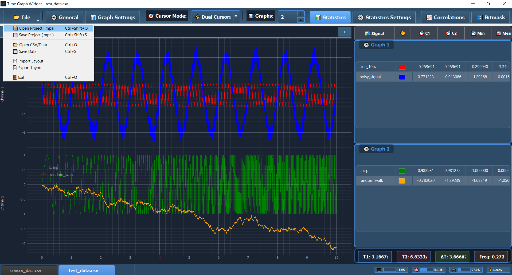
File menüsü açık - Open Project (.mpai) Ctrl+Shift+O ve Save Project (.mpai) Ctrl+Shift+S kısayolları. Ayrıca Open CSV/Data, Save Data, Import/Export Layout ve Exit seçenekleri görülüyor.
11.2 Proje Kaydetme
Adımlar:
- File → Save Project (.mpai) seçin
- Dosya adı girin:
- Örnek: motortest20231025.mpai
- Açıklayıcı isim kullanın (tarih, test numarası, vb.)
- Kaydet butonuna tıklayın
- Loading animasyonu gösterilir (1-2 saniye)
- Başarılı mesajı:
✅ Proje başarıyla kaydedildi: motor_test_20231025.mpai
💾 Proje Kaydetme: File → Save Project (.mpai) ile tüm ayarlarınızı ve veriyi tek dosyada saklayın.
Kaydedilen Metadata:
{
"original_file": "motor_data.csv",
"saved_date": "2023-10-25T14:30:00",
"time_column": "Time",
"row_count": 50000,
"column_count": 24,
"app_version": "1.0.0"
}
11.3 Proje Yükleme
Adımlar:
- File → Open Project (.mpai) seçin
- .mpai dosyanızı seçin
- Otomatik yükleme başlar:
- Veri yüklenir (Parquet - çok hızlı!)
- Grafik düzeni uygulanır
- Sinyaller seçilir ve renklendirilir
- Cursor pozisyonları geri gelir
- Filtreler aktif olur
- < 1 saniyede hazır!
Status Bar Mesajı:
✅ Proje başarıyla yüklendi: motor_test_20231025.mpai (Parquet - Hızlı!)
⚡ Hızlı Yükleme: .mpai dosyaları Parquet formatı kullandığı için çok hızlı yüklenir ve tüm ayarlarınızı geri getirir.
11.4 Proje Paylaşımı
Tek .mpai dosyası paylaşın:
Senaryo:
Mühendis A:
- Analizi yapar
- motor_analysis.mpai olarak kaydeder
- Dosyayı e-posta ile gönderir
Mühendis B:
- .mpai dosyasını açar
- Aynı grafik düzeni
- Aynı ayarlar
- Anında çalışmaya başlar
Avantajlar:
- ✅ Tek dosya - kolay
- ✅ Tekrar üretilebilir sonuçlar
- ✅ Ayar şaşması yok
- ✅ Hızlı paylaşım
12. Sorun Giderme
12.1 Yaygın Sorunlar ve Çözümleri
Sorun 1: Dosya Yüklenmiyor
Hata: "Dosya okunamadı" veya "Import failed"
Çözümler:
Adım 1: Dosya formatını kontrol edin
✅ Desteklenen: .csv, .xlsx, .xls, .mpai
❌ Desteklenmeyen: .txt, .dat, .bin
Adım 2: Delimiter ayarını kontrol edin
Virgül (,): İngilizce CSV
Noktalı virgül (;): Türkçe Excel CSV
Tab: Tab-separated
Adım 3: Encoding'i değiştirin
Türkçe karakter hatası → Latin-1 seçin
Garip karakterler → UTF-8 deneyin
Adım 4: Dosya boyutunu kontrol edin
Maksimum: 25 MB
Dosya properties'e sağ tıklayıp kontrol edin
Çok büyükse → Excel'de gereksiz satırları silin
❌ Yaygın Import Hataları: Delimiter yanlış, encoding uyumsuz, dosya çok büyük veya format desteklenmiyor olabilir.
Sorun 2: Grafik Görünmüyor
Hata: Boş grafik ekranı
Çözümler:
Adım 1: Sinyal seçili mi kontrol edin
Sol sidebar → Parameters
Checkbox'lar işaretli mi? ☑️
Adım 2: Grafik ataması yapın
Her sinyal için dropdown'dan grafik seçin:
📊 Graph 1, Graph 2, vb.
Adım 3: Auto Range yapın
Grafik üzerinde:
- Sağ tık → "Auto Range"
- Veya çift tık
Adım 4: Veri tipi kontrolü
String kolonlar grafik yapılamaz!
Sadece sayısal kolonlar gösterilir.
Sorun 3: Uygulama Yavaş veya Donuyor
Belirti: Gecikmeli grafik, donma
Çözümler:
Adım 1: Dosya boyutunu kontrol edin
Mevcut dosya < 25 MB olmalı
Status bar'da satır sayısına bakın
> 100,000 satır → Yavaş olabilir
Adım 2: Gereksiz sinyalleri kaldırın
20 sinyal yerine 5-10 sinyal seçin
Her sinyal hesaplama ve render yükü ekler
Adım 3: Grafik sayısını azaltın
6 grafik → 2-3 grafik
Daha az grafik = Daha hızlı render
Adım 4: İstatistikleri sınırlayın
⚙️ Statistics Settings
Gereksiz istatistikleri kapatın
Adım 5: Filtreleme kullanın
İlgili veri bölgesini filtreleyin
Veri miktarı azalır → Hız artar
Sorun 4: Cursor Çalışmıyor
Hata: Cursor görünmüyor veya değer göstermiyor
Çözümler:
Adım 1: Cursor Mode açık mı?
🎯 Cursor Mode butonu
None değil, Single veya Dual olmalı
Adım 2: Grafiğin içine tıklayın
Grafik alanı içinde mouse hareket ettirin
Dışarıda cursor görünmez
Adım 3: Sinyal seçili olmalı
Cursor değerleri için en az 1 sinyal aktif olmalı
Parameters'dan sinyal seçin
Adım 4: Statistics panel'i açın
Sağ sidebar → Statistics sekmesi
Cursor değerleri orada görünür
Sorun 5: Türkçe Karakterler Bozuk
Hata: ş→?, ğ→?, ı→? gibi görünüyor
Çözüm:
Import Dialog'da:
Encoding: Latin-1 seçin (Türkçe için en iyi)
Alternatif:
CSV'yi Excel'de açın
Farklı kaydet → CSV UTF-8
Time Graph X'te UTF-8 encoding ile açın
Sorun 6: Proje (.mpai) Açılmıyor
Hata: "Invalid project file" veya "Cannot load project"
Çözümler:
Adım 1: Dosya bozulmuş olabilir
Dosya boyutu 0 KB mi?
Yeniden kaydetmeyi deneyin (orijinal CSV'den)
Adım 2: Versiyon uyumsuzluğu
Dosya çok eski bir versiyonla mı kaydedilmiş?
Orijinal CSV'yi yükleyin, yeniden .mpai kaydedin
Adım 3: Dosya yolu çok uzun
Windows'ta 260 karakter limiti var
Dosyayı kısa bir yola taşıyın (örn: C:\Data\)
12.2 Hata Mesajları ve Anlamları
12.3 Log Dosyası
Detaylı hata bilgisi için log dosyasına bakın:
Log Konumu:
Uygulama klasöründe:
time_graph_app.log
Log Açma:
1. Uygulama klasörüne gidin (time_graph_x.exe'nin yanında)
2. time_graph_app.log dosyasını Not Defteri ile açın
3. En altta son hatalar var
Log Örneği:
[2023-10-25 14:30:00] INFO - Uygulama başlatıldı
[2023-10-25 14:30:15] INFO - Dosya yüklendi: motor_data.csv (50000 satır)
[2023-10-25 14:30:20] ERROR - Kolon 'Speed' bulunamadı
[2023-10-25 14:30:25] WARNING - Yüksek NULL oranı: Temperature (%35)
📄 Log Dosyası: Uygulama klasöründeki time_graph_app.log dosyasında detaylı hata kayıtları bulunur.
12.4 Uygulamayı Sıfırlama
Tüm sorunlar devam ediyorsa:
Tam Sıfırlama:
1. Uygulamayı kapatın
2. Uygulama klasöründe şunları silin:
- .cache/ klasörü (Parquet cache)
- config/ klasörü (Ayarlar)
- time_graph_app.log (Log)
3. Uygulamayı yeniden başlatın
Sadece Cache Temizleme:
1. Uygulamayı kapatın
2. .cache/ klasörünü silin
3. Yeniden başlatın
(Sadece yükleme hızı ilk seferde yavaş olur)
13. Teknik Destek
Sorun çözülmediyse:
📧 E-posta: cuma.ogut@tei.com.tr
Destek talep ederken şunları ekleyin:
- Log dosyası (timegraphapp.log)
- Hata mesajının screenshot'u
- Kullandığınız dosya örneği (mümkünse)
- İşletim sistemi ve versiyonu
📚 Ek Bilgiler
Versiyon Notları
v1.0.0 (Ekim 2025) - İlk Kararlı Sürüm
- ✅ Çoklu dosya desteği (3 dosya)
- ✅ MPAI proje formatı
- ✅ Gelişmiş filtreleme sistemi
- ✅ Deviation analizi
- ✅ Parquet cache (8-27x hızlı)
- ✅ Otomatik veri temizleme
- ✅ Dual cursor ölçüm
- ✅ Korelasyon analizi
- ✅ Bitmask (dijital sinyal) analizi
- ✅ Tema desteği
Sistem Bilgileri
Desteklenen Dosya Boyutu: 25 MB
Maksimum Satır Sayısı: ~1,000,000 satır
Maksimum Kolon Sayısı: Sınırsız (önerilen: < 100)
Maksimum Eşzamanlı Dosya: 3
Bu yazılım ticari lisans altındadır. Kullanım koşulları için lisans sözleşmesine bakınız.
🎯 Hızlı Başlangıç Özeti
5 Dakikada Time Graph X:
1. 📁 Dosya yükle → File → Open → CSV/Excel seç
2. ⚙️ Import ayarları → Delimiter, Encoding, Zaman kolonu
3. 📊 Grafik düzenle → Graph Settings → 2-3 grafik seç
4. 🎨 Sinyal seç → Sol sidebar → Checkbox işaretle
5. 🎯 Ölçüm yap → Dual Cursor → İki nokta seç
6. 📈 Analiz et → Statistics, Filters, Correlations
7. 💾 Proje kaydet → File → Save Project (.mpai)
İyi çalışmalar! 🚀
Doküman Sonu
Bu kılavuz, Time Graph X v1.0.0 için hazırlanmıştır.
Son Güncelleme: Ekim 2025